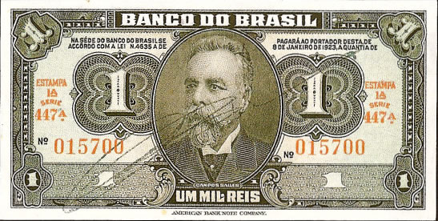
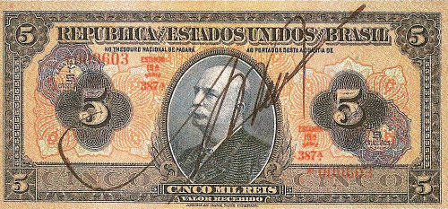
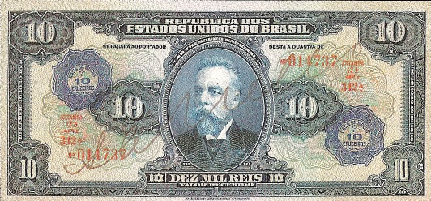
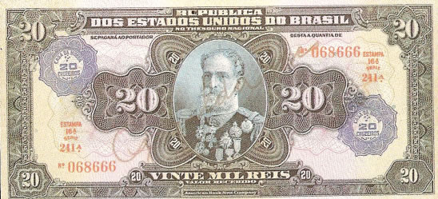
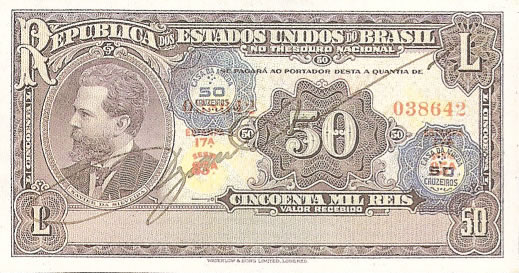
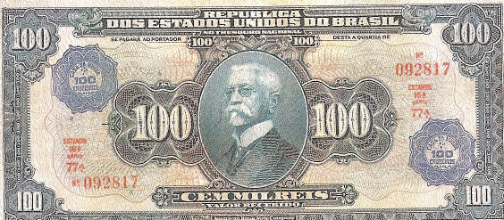
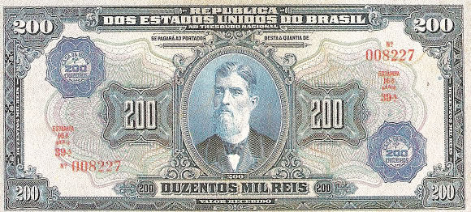
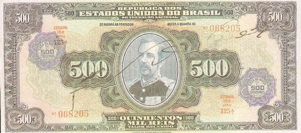

Réis com Carimbo de Cruzeiro
Tabelas para consulta e identificação de cédulas
AMERICAN BANK NOTE COMPANY (ABN)
1 ESTAMPA - BANCO DO BRASIL

| Num |
Autógrafos e Chancelas |
Data |
Séries |
Tipo |
| 1 |
Autografada | 1944 | 279/500 | ---- |
Estampa: Anverso: Manuel Ferraz de Campos Salles
Reverso: Armas da República
Cores: Anverso: Verde
Reverso: Policromia
Dimensões Básicas: 123mmx62mm
OBS:(Nota de Dimas S. Souza) "Emitidas pelo Banco do Brasil em 1944 por existir um estoque muito grande e já sem valor, porque nesta data já circulava o padrão CRUZEIRO. O governo colocou-as em circulação valendo UM CRUZEIRO, aproveitando as séries núm. 279 a 500.
AMERICAN BANK NOTE COMPANY (ABN)
19 ESTAMPA - TESOURO NACIONAL

| Num |
Autógrafos e Chancelas |
Data |
Séries |
Tipo |
| 2 |
Autografada | 1942 | 375/435 | Valor Recebido |
Estampa:Anverso: Barão do Rio Branco (José Maria da Silva Paranhos)
Reverso: Indústria e Comércio (alegoria)
Cores:Anverso: Azul sobre policromia
Reverso: Sépia
Dimensões Básicas: 162mmx74mm
OBS:(Nota de Dimas S. Souza) "Emitidas em 1925 pelo Tesouro Nacional e aproveitadas para o padrão CRUZEIRO recebendo a dupla super impressão na cor azul em forma de rosácea com os dizeres: CASA DA MOEDA - 5 CRUZEIROS". Séries 375 a 435.
AMERICAN BANK NOTE COMPANY (ABN)
17 ESTAMPA - TESOURO NACIONAL

| Num |
Autógrafos e Chancelas |
Data |
Séries |
Tipo |
| 3 |
Autografada | 1942 | 320/370 | Valor Recebido |
Estampa:Anverso: Manuel Ferraz de Campos Salles
Reverso: Rio de Janeiro (Av. Beira Mar)
Cores:Anverso: Azul sobre policromia
Reverso: Verde
Dimensões Básicas: 171mmx80mm
OBS:(Nota de Dimas S. Souza) "Emitidas em 1925 pelo Tesouro Nacional e aproveitadas para o padrão CRUZEIRO recebendo a dupla super impressão na cor azul em forma de rosácea com os dizeres: CASA DA MOEDA - 10 CRUZEIROS". Séries 320 a 370.
AMERICAN BANK NOTE COMPANY (ABN)
16 ESTAMPA - TESOURO NACIONAL

| Num |
Autógrafos e Chancelas |
Data |
Séries |
Tipo |
| 4 |
Autografada | 1942 | 225/278 | Valor Recebido |
Estampa:Anverso: Manuel Deodoro da Fonseca
Reverso: Proclamação da República (alegoria)
Cores:Anverso: Azul sobre policromia
Reverso: Laranja
Dimensões Básicas: 180mmx83mm
OBS:(Nota de Dimas S. Souza) "Emitidas em 1925 pelo Tesouro Nacional e aproveitadas para o padrão CRUZEIRO recebendo a dupla super impressão na cor azul em forma de rosácea com os dizeres: CASA DA MOEDA - 20 CRUZEIROS". Séries 225 a 278.
WATERLOW & SONS LIMITED - LONDON (WSL)
17 ESTAMPA - TESOURO NACIONAL

| Num |
Autógrafos e Chancelas |
Data |
Séries |
Tipo |
| 5 |
Autografada | 1942 | 79/86 | Valor Recebido |
Estampa:Anverso: Joaquim Xavier da Silveira Júnior
Reverso: Monumento à Independência do Brasil
Cores:Anverso: Violeta sobre policromia
Reverso: Violeta, em calcografia
Dimensões Básicas: 139mmx73mm
OBS:(Nota de Dimas S. Souza) "Emitidas em 1936 pelo Tesouro Nacional e aproveitadas para o padrão CRUZEIRO recebendo a dupla super impressão na cor azul em forma de rosácea com os dizeres: CASA DA MOEDA - 50 CRUZEIROS". Séries 79 a 85. Foram carimbadas algumas da série 86.
AMERICAN BANK NOTE COMPANY (ABN)
16 ESTAMPA - TESOURO NACIONAL

| Num |
Autógrafos e Chancelas |
Data |
Séries |
Tipo |
| 6 |
Autografada | 1942 | 61/83 | Valor Recebido |
Estampa:Anverso: Afonso Augusto Moreira Pena
Reverso: Vista Parcial do Rio de Janeiro
Cores:Anverso: Azul sobre policromia
Reverso: Verde
Dimensões Básicas: 186mmx86mm
OBS:(Nota de Dimas S. Souza) "Emitidas em 1925 pelo Tesouro Nacional e aproveitadas para o padrão CRUZEIRO recebendo a dupla super impressão na cor azul em forma de rosácea com os dizeres: CASA DA MOEDA - 100 CRUZEIROS". Séries 61 a 83.
AMERICAN BANK NOTE COMPANY (ABN)
16 ESTAMPA - TESOURO NACIONAL

| Num |
Autógrafos e Chancelas |
Data |
Séries |
Tipo |
| 7 |
Autografada | 1942 | 38/48 | Valor Recebido |
Estampa:Anverso: Prudente José de Morais Barros
Reverso: Palácio Monroe RJ
Cores:Anverso: Azul sobre policromia
Reverso: Sépia
Dimensões Básicas: 189mmx87mm
OBS:(Nota de Dimas S. Souza) "Emitidas em 1925 pelo Tesouro Nacional e aproveitadas para o padrão CRUZEIRO recebendo a dupla super impressão na cor azul em forma de rosácea com os dizeres: CASA DA MOEDA - 200 CRUZEIROS". Séries 38 a 48.
AMERICAN BANK NOTE COMPANY (ABN)
15 ESTAMPA - TESOURO NACIONAL

| Num |
Autógrafos e Chancelas |
Data |
Séries |
Tipo |
| 8 |
Autografada | 1942 | 98/137 | Valor Recebido |
Estampa:Anverso: Floriano Peixoto
Reverso: Armas da República
Cores:Anverso: Azul sobre policromia
Reverso: Preto em Calcografia.
Dimensões Básicas: 193mmx89mm
OBS:(Nota de Dimas S. Souza) "Emitidas em 1925 pelo Tesouro Nacional e aproveitadas para o padrão CRUZEIRO recebendo a dupla super impressão na cor azul em forma de rosácea com os dizeres: CASA DA MOEDA - 500 CRUZEIROS". Séries 98 a 137, existindo algumas sem a super impressão.
As imagens foram retiradas do livro "Cédulas Brasileiras de 1942 à 1991" e podem estar sobre copyright. Estão sendo aqui usadas como ferramenta de consulta.
Website desenvolvido em HTML 5, a linguagem do futuro! Feito em Adobe ™ Dreamweaver ® CS 5.5